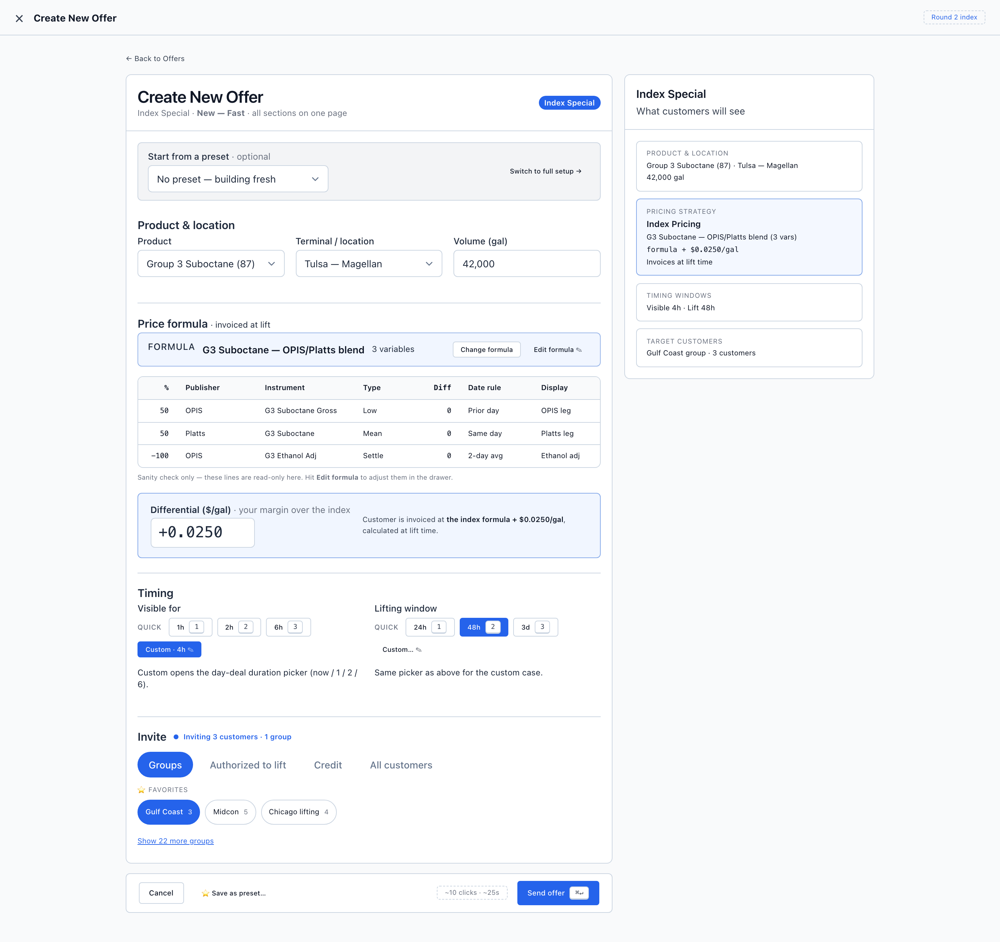
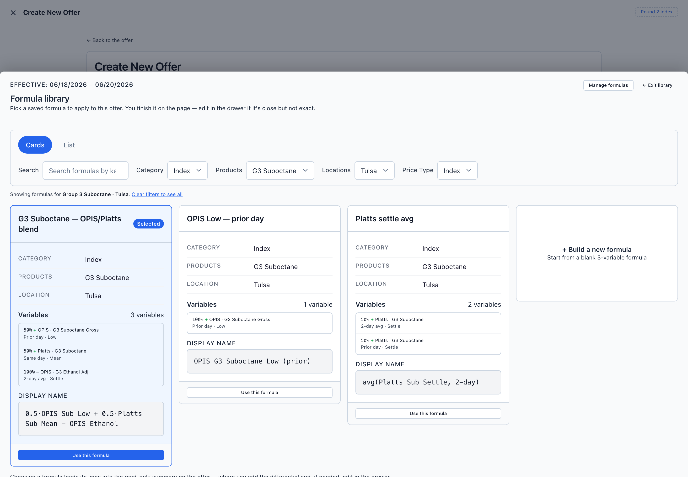
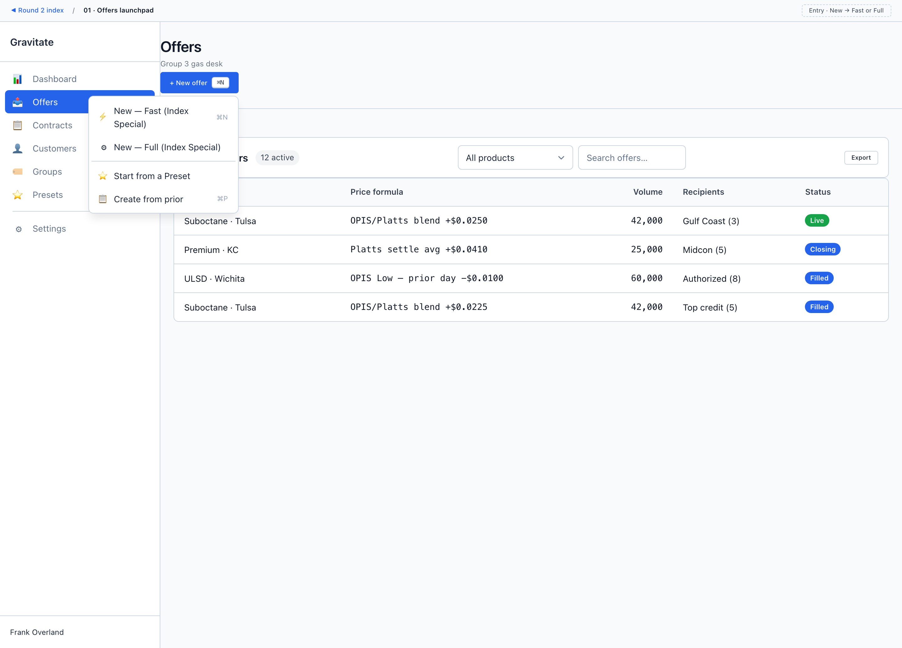

Index Special Offers · Lo-fi Round 2 · Audit edits
Before / After
The audit recommendations, built into separate *.revised.html screens so the originals are untouched and you can compare side by side. Click any image to open it full size; the live links open the actual wireframes.
Read the full reasoning in the UX audit report →
02 · Create New Offer (Fast)
the hero — most of the changesWhat changed: "Template" → Formula (#1); the editable 21-cell grid is now a read-only sanity-check table + Edit-formula drawer (#2); the duplicate "Resulting price" input removed (#3); the differential is promoted into the focal point (#4); the preset bar drops Save (moved to footer) and keeps Load + Switch-to-full (#5); a live recipient tally sits by Invite (#7); both timing windows share one pattern with consistent keys (#8); side-stripe accents removed (#9); the click/time budget chip is back (#10).


03 · Formula picker
#1 rename · #6 pickerWhat changed: "Formula Template Selector" → Formula library and "Select Template" → "Use this formula" (#1); filters arrive pre-set to Group 3 Suboctane · Tulsa instead of "All", with a "showing… clear filters" line (#6); the horizontal card scroll becomes a wrapping grid so every formula — including "+ Build a new formula" — is visible at once (#6).


01 · Offers launchpad
navigation onlyWhat changed: essentially unchanged — its only finding (#10) was the open menu overlapping the list title, which is a static-wireframe artifact, not a real-app issue. The revised copy exists so navigation stays inside the revised set; the entry menu is kept open because it communicates the New → Fast / Full decision.

Nothing in the original wireframes, index.html, or lofi-chrome.css was modified. The revised screens load a separate assets/lofi-chrome.revised.css (it imports the original, then overrides only what the audit calls for), so the two sets are fully isolated. Not yet folded into the round or documented with /wireframe-index — that's the next step if you want to keep these.